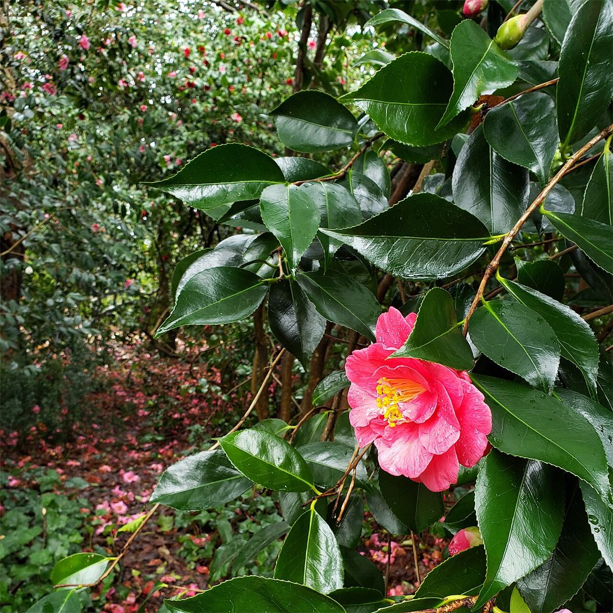

扉を開けると、静かな空気が流れていました。ゆったりとお話ができて、肩の力が抜けていくのを感じました。帰り道は、少し足取りが軽くなった気がします。
口コミ
以下は、サイト制作側が作成したイメージ例です。実際のお客様の声ではありません。
ホームページ完成後に、実際のお声へ差し替える想定のページです。
初めての店は緊張しますが、声をかけてもらううちに気持ちがほぐれました。こちらの話をよく聞いてくれる雰囲気で、また来たいなと思いながら店を出ました。
町を歩いたついでに立ち寄りました。店内は落ち着いていて、居心地のよい時間でした。鏡を見て思わず笑顔になり、気分よく家路につきました。

実際のお声は、ご来店された方のものをお待ちしています。